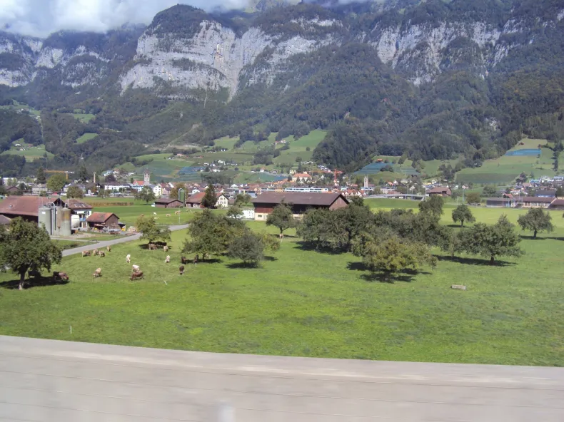

Roteiro de viagem pela Europa durante 20 dias – De Innsbruck (Áustria), para Vaduz (Liechtenstein) e Zurique (Suíça)
E por aqui também, pela janela do ônibus, vimos paisagens estonteantes. Passamos pelo vale do Rio Inn através de bucólicas paisagens tipicamente alpinas. Passamos pelo Túnel de Arlberg (sob o Monte de São Cristóvão) e por Feldkirch para chegada ao Principado do Liechtenstein, e paramos em sua capital, Vaduz.

Voltar a pagina anterior